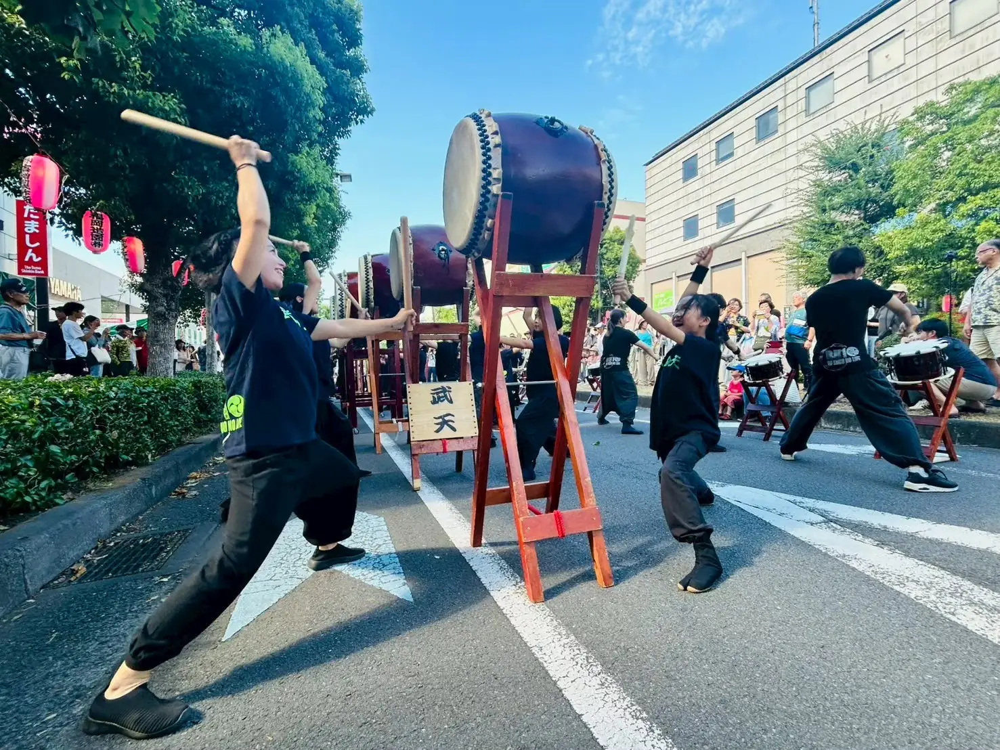

和太鼓 武天は2007年の結成以来、あきる野市を拠点に、地域のお祭りやイベントなど多くの舞台で演奏を重ねてきました。
小学1年生から70代まで、親子・大人・若者の3チームで活動する私たちが、20年の節目に感謝の気持ちを込めてお届けする公演です。和太鼓を初めて聴く方も、どうぞお気軽にお越しください。
※ 演目・出演者は決まり次第、このページでお知らせします。

お支払いは当日、会場の受付でお願いいたします。
座席・料金は決まり次第、このページでお知らせします。
人数とお名前・ご連絡先を入力します。会員登録は必要ありません。
「受付番号」が書かれたメールがすぐに届きます。この時点ではまだご予約は確定していません。
運営で確認のうえ、ご予約確定のメールをお送りします。
会場の受付で受付番号とお名前をお伝えください。お支払いと引き換えにチケットをお渡しします。
当日、会場の受付でお支払いください。お支払いと引き換えにチケットをお渡しします。お申し込みの時点でのお支払いはありません。
迷惑メールフォルダに入っていないかご確認ください。携帯電話のアドレスで受信設定をしている場合は「wadaiko-buten.net」からのメールを受け取れるように設定してください。それでも届かない場合は、お手数ですがお問い合わせフォームからご連絡ください。
お手数ですが、受付番号を添えてお問い合わせフォームからご連絡ください。
1回のお申し込みは1組8人までです。団体でのご来場など、それより多い場合はお問い合わせフォームからご相談ください。
未就学児の入場・料金については決まり次第お知らせします。なお、和太鼓は大きな音が出ますので、音が苦手なお子さまはご注意ください。